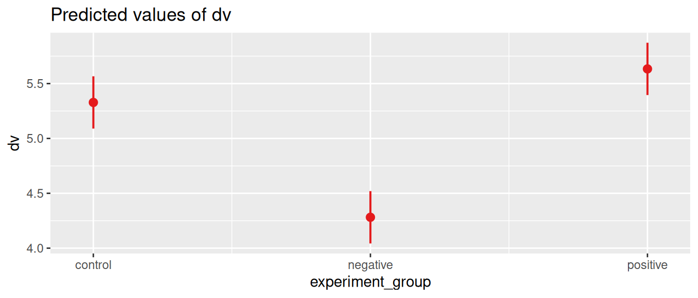

library(afex)
library(emmeans)
library(sjPlot)ANOVA
What is an ANOVA?
This makes it particularly suitable for experimental research, where participants are randomly assigned to different groups, and the researcher wants to know whether the groups differ on some outcome variable. Because of the random assignment, all possible confounding variables should be equally distributed over the groups, which allows us to make causal inferences about the effect of the independent variable on the dependent variable.1
There are different types of ANOVA to cover a wide range of research designs. The most common ones are:
One-way ANOVA
- Purpose. Compare means between-subjects in different groups.2
- Example. We want to know how the design of a health care robot affects how comfortable people feel about interacting with the robot. To test this we randomly asign participants to three experimental groups, that are shown three different robot designs (Alice, Nao, and RoboCop). They then answer multiple questions based on which we measure a comfort rating scale. We can now use One-way ANOVA to compare the mean comfort rating between the three groups.
Two-way ANOVA
- Purpose. Compare means between-subjects in different groups, for two independent variables.
- Example. In addition to comparing three different designs of a health care robot, we could also compare between using a male or female voice. We then randomly assign participants to six groups (3 designs * 2 voices), and use two-way ANOVA to test whether the design and voice have an effect on the perceived attractiveness. We can then also test whether there is an interaction between the two variables, to see if specific combinations of design and voice are particularly comforting.
Repeated measures ANOVA
- Purpose. Compare means within-subjects measured at different timepoints.3
- Example. Instead of the self-reporting comfort rating, we could measure how people react to interacting with a health care robot by measuring their heart rate. We could then measure the heart rate of participants before, during, and after interacting with the robot. We can then use repeated measures ANOVA to compare the heart rate at each stage.
Mixed-design ANOVA
- Purpose. Combine between-subjects and within-subjects factors.
- Example. This allows us to measure simultaneously the effect of the design of a health care robot (one-way anova example) on the change in heart rate (repeated measures example). We divide participants into three groups that are shown the three different designs, and measure the heart rate of participants before, during, and after interacting with the robot. We can then use mixed-design ANOVA to test whether the three designs of a health care robot affect the change in hearthrate differently.
How to use it
We’ll use the afex and emmeans packages to perform ANOVA tests and compare means, and we’ll use the sjPlot package to visualize the results.
For our examples we’ll use our Practice data. In this data have a (fictional) experiment where we study the effect of popular media on people’s trust in journalists. Specifically, we’re using the following variables:
- id. A unique identifier for each participant.
- experiment_group. The group that participants were assigned to. Each group viewed a different movie that was either neutral (control), positive, or negative about journalism.
- np_subscription. Whether participants have a subscription to a national newspaper, with values yes or no.
- trust_t1 and trust_t2. The trust in journalists, measured before (t1) and after (t2) watching a movie about journalism.
The experiment_group and np_subscription variables are our independent variable. To use these in the ANOVA, we’ll explicitly convert them to factors, to indicate that they are categorical variables.
library(tidyverse)
d <- read_csv("https://tinyurl.com/R-practice-data") |>
mutate(experiment_group = as.factor(experiment_group),
np_subscription = as.factor(np_subscription)) |>
select(id, experiment_group, np_subscription, trust_t1, trust_t2)
dOne-way ANOVA
In one-way ANOVA we compare the means of a dependent variable between two or more groups in a single independent variable. We can use this to test the main question of our experiment: whether the movie (experimental_group) has an effect on the trust in journalists (trust_t2).4
We use the aov_car function from the afex package to fit the ANOVA model. The formula that we use in this function is, as usual, dependent_variable ~ independent_variable. However, we also need to specify the unique user id (id) using the Error function. This way we explicitly clarify that each row in the data belongs to a unique participant in the study, which prevents you from mixing up between-subjects and within-subjects effects (more on this in the repeated measures section) So the full formula is dependent_variable ~ independent_variable + Error(id).
m = aov_car(trust_t2 ~ experiment_group + Error(id), data=d)
mAnova Table (Type 3 tests)
Response: trust_t2
Effect df MSE F ges p.value
1 experiment_group 2, 597 2.95 34.13 *** .103 <.001
---
Signif. codes: 0 '***' 0.001 '**' 0.01 '*' 0.05 '+' 0.1 ' ' 1When we print the output of the aov_car function, we get the main results of the ANOVA test. In this one-way ANOVA we have a single independent variable, which is the experiment_group. The output shows us the results of the F-test (\(F_{2, 597} = 34.13, p < 0.001\)) which tells us that the difference between the groups is significant. In other words, the movie that participants watched had a significant effect on their trust in journalists.
We also get an \(eta^2\) (eta squared) value in the ges column (generalized eta squared5), This is a measure of effect size that tells us how much variance in the dependent variable is explained by the independent variable (similar to the \(R^2\) value in regression).
Comparing between groups
The \(eta^2\) and F-test only tell us that there is a difference between the groups, but not where the difference is. To compare bewteen the groups, we can first of all look at their means. For this we’ll use the emmeans function from the emmeans package.
means = emmeans(m, "experiment_group")
means experiment_group emmean SE df lower.CL upper.CL
control 5.33 0.121 597 5.09 5.57
negative 4.28 0.121 597 4.04 4.52
positive 5.63 0.121 597 5.40 5.87
Confidence level used: 0.95 Now we can see that the lowest trust score is in the negative group, and the highest in the positive group. However, we do not yet know whether the diffences between all the groups are significant. It could be that the positive group is significantly higher than the negative group, but not significantly higher than the control group. To test this we can use the pairs function to get the pairwise comparisons for the means we just computed.
pairs(means) contrast estimate SE df t.ratio p.value
control - negative 1.047 0.172 597 6.097 <.0001
control - positive -0.306 0.172 597 -1.780 0.1770
negative - positive -1.352 0.172 597 -7.877 <.0001
P value adjustment: tukey method for comparing a family of 3 estimates Here we see all possible combinations of groups. The control - negative (control minus negative) row tells us how much the trust score in the control group is higher than in the negative group, and whether this difference is significant.
Finally, we can visualize the results. afex has a built-in plot function (afex_plot), but throughout this book we often use the flexible plot_model function from the sjPlot package, and we can use this here as well! We can get the linear model from the aov_car output using $lm, and then use the plot_model function to visualize the results.
plot_model(m$lm, type='pred', terms='experiment_group')
Experimental versus observed factors
In the previous example our independent variable was experimentally manipulated: we randomly assigned participants to the three groups. Accordingly, any effects that we find are likely to represent causal relationships. If people with different opinions about journalism were randomly distributed over the groups, we can be confident that the differences we find after showing them different movies are due to the movies themselves.
However, in some cases we might have an independent variable that is observed, meaning that we did not manipulate it, but only observed a value that was already there. This is the case for variables like age and gender, and in our case also for np_subscribed (whether participants have a newspaper subscription).
When factors are observed, it has two implications for the ANOVA test:
- Causality. It limits the ability to make causal inferences about the effect of the independent variable on the dependent variable.
- Effect size. We need to correct the \(eta^2\) value to get more reliable effect sizes. The
afexpackage does this automatically for us by using the generalized \(eta^2\) value (gescolumn in the output).However, we do need to tell it when a factor is observed, using theobservedargument in theaov_carfunction.
Let’s see how this works in practice, using the np_subscription variable as an observed factor. With observed='np_subscription' we tell the aov_car function that the np_subscription variable is an observed factor.
aov_car(trust_t2 ~ np_subscription + Error(id), observed='np_subscription', data=d)Anova Table (Type 3 tests)
Response: trust_t2
Effect df MSE F ges p.value
1 np_subscription 1, 598 3.16 21.99 *** .035 <.001
---
Signif. codes: 0 '***' 0.001 '**' 0.01 '*' 0.05 '+' 0.1 ' ' 1In this case our results only tell us that there is a significant difference between people with and without a newspaper subscription. We cannot conclude that this is because having a newspaper subscription causes people to trust journalists more. We are no longer certain about the order of the effect (trust in journalists might also cause people to get a newspaper subscription), and there can be confounding variables that influence both (e.g., education level, socio-economic status).
Two-way ANOVA
In a two-way ANOVA we compare the means of a dependent variable between two or more groups in two independent variables. To demonstrate this we’ll use the np_subscription variable as a second independent variable.
The formula for a two-way ANOVA is dependent_variable ~ independent_variable_1*independent_variable_2 + Error(id). The * symbol is a shorthand for including both the main effects and the interaction effect between the two independent variables. Note that we also again specify that np_subscription is an observed factor.
m = aov_car(trust_t2 ~ experiment_group*np_subscription + Error(id),
observed='np_subscription', data=d)Now our output shows three F-tests: one for the main effect of experiment_group, one for the main effect of np_subscription, and one for the interaction effect between the two. We also get three \(eta^2\) values, one for each effect, which tell us how much variance is explained by each effect.
Comparing between groups
We can again use the emmeans function to get the means for each group. Let’s visualize the results first to get a better idea of how the two independent variables interact to affect the trust in journalists.
plot_model(m$lm, type='pred', terms=c('experiment_group', 'np_subscription'))
Here we see that the effect of np_subscription (having a newspaper subscription) mostly matters for the negative group. It seems that overall people that watched a negative movie have a lower trust in journalists, but this is mostly true for people that do not have a newspaper subscription. In other words, people that have a newspaper subscription might not be as affected by the negative movie.
We can now use the emmeans function to test these differences. To see how the effect of experimental_group is different for people that do or do not have a newspaper subscription, we can look at means of the experiment_group variable conditional on (by) the np_subscription variable.
means = emmeans(m, 'experiment_group', by='np_subscription')
meansnp_subscription = no:
experiment_group emmean SE df lower.CL upper.CL
control 5.17 0.183 594 4.82 5.53
negative 3.31 0.173 594 2.97 3.65
positive 5.63 0.171 594 5.29 5.96
np_subscription = yes:
experiment_group emmean SE df lower.CL upper.CL
control 5.43 0.151 594 5.14 5.73
negative 5.07 0.157 594 4.77 5.38
positive 5.64 0.158 594 5.33 5.95
Confidence level used: 0.95 pairs(means)np_subscription = no:
contrast estimate SE df t.ratio p.value
control - negative 1.860 0.252 594 7.393 <.0001
control - positive -0.452 0.250 594 -1.804 0.1692
negative - positive -2.312 0.244 594 -9.491 <.0001
np_subscription = yes:
contrast estimate SE df t.ratio p.value
control - negative 0.360 0.217 594 1.656 0.2232
control - positive -0.208 0.218 594 -0.951 0.6079
negative - positive -0.568 0.223 594 -2.550 0.0296
P value adjustment: tukey method for comparing a family of 3 estimates We can now compare how the movie affects the trust in journalists, while taking into account how this is conditional on whether people have a newspaper subscription.
Likewise, we could also compare how the newspaper subscription affects the trust in journalists, while taking into account how this is conditional on the movie that people watched.
means = emmeans(m, 'np_subscription', by='experiment_group')
means
pairs(means)And finally, we could also compare between ALL the groups.
means = emmeans(m, c('experiment_group', 'np_subscription'))
means
pairs(means)Conditions and assumptions
ANOVA is a parametric test, which means that it makes assumptions about the data. If these assumptions are violated, the results of the ANOVA can be unreliable. The most important assumptions are:
- Normality. The dependent variable should be normally distributed in each group.
- Homogeneity of variance. The variance of the dependent variable should (approximately) be equal in each group.
- Independence. Observations should be independent of each other.
Here we will only discuss the assumption of homogeneity of variance, because it is more specific to ANOVA. For the other assumptions, which are more general to linear models, we refer to the regression tutorial. If you have not yet learned about regression, you can ignore the details of these other assumptions for now.
Homogeneity of variance
Homogeneity of variance means that the variance of the dependent variable should be (approximately) equal in each group. In our one-way ANOVA example, this means that the variance of the trust score should be equal in the control, positive, and negative groups.
We can test this with the Levene’s test, which is a test for homogeneity of variance. The null hypothesis of the Levene’s test is that the variance is equal in each group. If the p-value of the test is less than 0.05, we reject the null hypothesis and conclude that the variance is not equal in each group.
To perform the Levene’s test we can use the leveneTest function from the car package. To test whether the variance of the trust score (dependent variable) is equal in each group of the independent variable, we use the formula dependent_variable ~ independent_variable.
library(car)
leveneTest(trust_t2 ~ experiment_group, data=d)In this case the Levene’s test is not significant, which means that we can assume that the variance of the trust score is sufficiently equal in each group.
What if the variance is not equal?
If Levene’s test is significant, we would need to look more carefully into the variance across groups. ANOVA is fairly robust to violations of the assumption of homogeneity of variance, but if the variance is very different between groups, the results of the ANOVA can be unreliable.
So how much difference in variance is too much? One strategy is to look at the ratio of the largest to the smallest variance across the groups. A common rule of thumb is that this ratio should not be more than 3.6 However, note that this is just a rule of thumb, and if the sample size is small (less than 30 per group), or the groups are very unbalanced (i.e. one group has much more observations than the others), it is better to be more conservative.
In any case, it is always a good idea to look at the sample size and variances across groups to see where potential problems might be.
var_per_group <- d |>
group_by(experiment_group) |>
summarize(n = n(), variance = var(trust_t2))
var_per_groupvar_per_group |>
summarize(ratio = max(variance) / min(variance))However, this is only a rule of thumb.
When the N per group is at least 30, then you are probably fine as long as the ratio of the largest to the smallest variance is not more than 3.
One rule of thumb is that the ratio of the largest to the smallest variance should not be more than 3.
One of how much difference of variance there is, is the ratio of the largest to the smallest variance. The following code calculates the variance for each group, and then calculates the ratio of the largest to the smallest variance.7
d |>
group_by(experiment_group) |>
summarize(variance = var(trust_t2)) |>
summarize(ratio = max(variance) / min(variance))If if was significant, we would need to be carefull with interpreting the results of the ANOVA, and we might need to use a different model, like ANOVA with Welch’s correction, or a non-parametric test like the Kruskal-Wallis test.
References
Dean, Angela, and Daniel Voss. 1999. Design and Analysis of Experiments. Springer.
Olejnik, Stephen, and James Algina. 2003. “Generalized Eta and Omega Squared Statistics: Measures of Effect Size for Some Common Research Designs.” Psychological Methods 8 (4): 434.
Footnotes
It is also possible to use ANOVA with non-experimental (i.e. observational) data. However, this limits our ability to make causal inferences. For observational data it is more common to use regression analysis, because this provides more flexibility to control for confounding variables. (This is also possible with more advanced forms of ANOVA, like ANCOVA and MANOVA).↩︎
This is similar to an independent samples t-test, but can be used for more than two groups.↩︎
This is similar to a paired samples t-test, but can be used for more than two groups. This is primarily used for within-subjects designs, where the same participants are measured multiple times.↩︎
We’re using the trust score after watching the movie. It is ok to ignore the trust score before watching the movie, because we’ve randomly assigned participants to the different groups. This means that the trust score before watching the movie should be the same in each group. However, as we’ll show below, we could also use a repeated measures ANOVA to compare the trust score before and after watching the movie.↩︎
The generalized \(eta2\) is a generalization of the (partial) \(eta2\) value that is often reported in ANOVA output. It was proposed by Olejnik and Algina (2003) because regular partial \(eta2\) values can be misleading when comparing between studies with different designs. Specifically, it allows taking into account whether factors in the model are experimentally manipulated or observed. In the When factors are observed subsection below we show how to specify this in the
aov_carfunction.↩︎By ‘rule of thumb’, we mean that it’s a general guideline, and not a number that is set in stone. Different authors have also proposed different values for this ratio. One source for the 3:1 ratio is Dean and Voss (1999).↩︎
The first
summarizeuses the groups specified in thegroup_byfunction, and calculates the variance for each group. This results in a tibble where each row is a group, and thevariancecolumn contains the variance score. The secondsummarizecalculates the largest (max) and smallest (min) variance, and then calculates the ratio between the two.↩︎